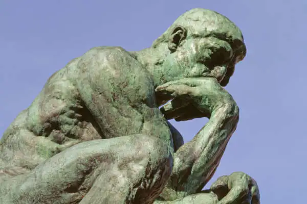
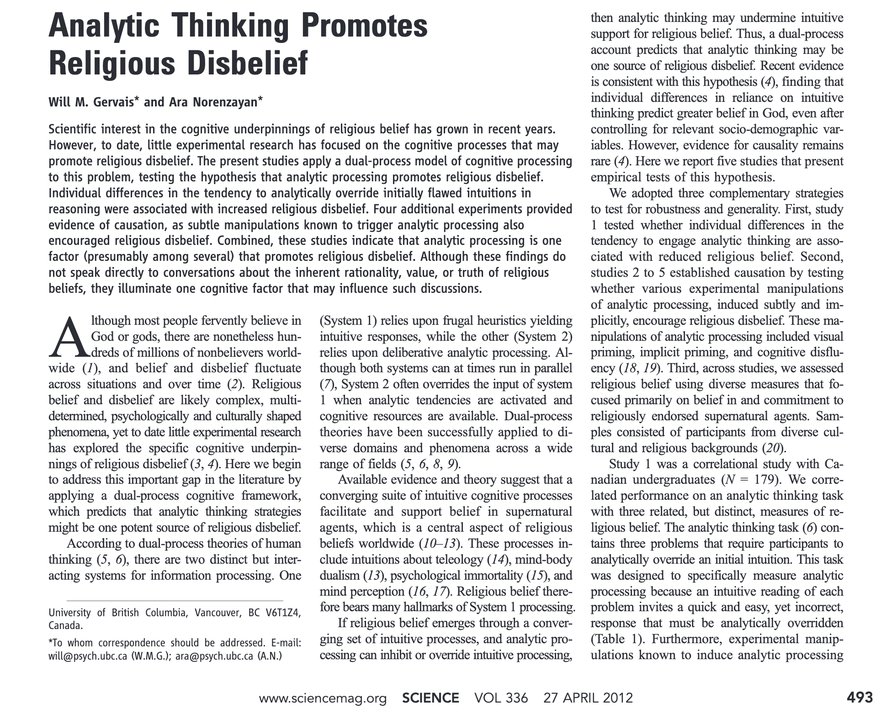

Statistical inference
Reasoning under uncertainty
https://pages.cs.wisc.edu/~dyer/cs540/notes/uncertainty.html
Reasoning = the process of thinking about something in a logical way in order to form a conclusion or judgment | the drawing of inferences or conclusions through the use of reason
Agents (and people) want to make rational decisions even when they are not certain about the truth or falsity of a proposition.
Rather than reasoning about the truth or falsity of a proposition, reason about the belief that a proposition (or an event) is true (or is going to happen).
For each primitive proposition (or event), attach a degree of belief to the sentence.
Use probability theory as a formal method of manipulating degrees of belief.
Given a proposition, A, assign a probability, P(A), such that 0 <= P(A) <= 1, where if A is true, P(A)=1, and if A is false, P(A)=0. Proposition A must be either true or false, but P(A) summarizes our degree of belief in A being true.
Obtaining and Interpreting Probabilities
There are several senses in which probabilities can be obtained and interpreted, among them the following:Frequentist Interpretation
The probability is a property of a population of similar events. E.g., if set S = P union N, and P intersection N is the empty set, then the probability of an object being in set P is |P|/|S|. Hence, in this interpretation probabilities come from experiments and determining the population associated with a given proposition.Subjectivist Interpretation
A subjective degree of belief in a proposition or the occurrence of an event. E.g., the probability that you’ll pass the Final Exam based on your own subjective evaluation of the amount of studying you’ve done and your understanding of the material. Hence, in this interpretation probabilities characterize the agent’s beliefs.
Axioms of probability theory
\(\Omega\): a finite set (the sample space)
\(A\): any subset of \(\Omega\) (an event), \(A \subseteq \Omega\)
\(P(A)\): the probability of \(A\) is a function that, given an event, returns a real number and satisfies the following axioms:
\(P(A) \ge 0\)
\(P(\Omega) = 1\)
\(P(A \cup B) = P(A) + P(B)\) if \(A \cap B = \varnothing\)
If \(\Omega\) is an infinite set, the last axiom becomes: for an infinite sequence of disjoint subsets/events \(A_1, A_2, \ldots\)
\(P(\cup_{i=1}^{\infty}{A_i}) = \sum_{i=1}^{\infty}{P(A_i)}\)
Theorems (a.k.a. rules) of probability theory
\(P(A) \le 1\)
\(P(\varnothing) = 0\)
\(P(A') = 1 - P(A)\)
\(P(A \cup B) = P(A) + P(B) - P(A \cap B)\)
Definitions of probability theory
\(P(A \cap B)\) is the joint probability of \(A\) and \(B\)
\(P(A \mid B) = \frac{P(A \cap B)}{P(B)}\) is the conditional probability of \(A\) given \(B\)
\(A\) and \(B\) are independent iff \(P(A \cap B) = P(A)P(B)\)
If \(A\) and \(B\) are independent then \(P(A \mid B) = P(A)\)
Bayes’ theorem/rule
\[ P(A \mid B) = \frac{P(B \mid A) P(A)}{P(B)} \]
Frequentist vs Bayesian uncertainty
Frequentist vs Bayesian inference
https://www.health.ny.gov/diseases/chronic/discreen.htm
Sensitivity and specificity are measures of a test’s ability to correctly classify a person as having a disease or not having a disease. Sensitivity refers to a test’s ability to designate an individual with disease as positive. A highly sensitive test means that there are few false negative results, and thus fewer cases that have the disease are missed. The specificity of a test is its ability to designate an individual who does not have a disease as negative. A highly specific test means that there are few false positive results, and thus fewer cases that do not have the disease are misdiagnosed. It is desirable to have a test that is both highly sensitive and highly specific. This is frequently not possible. Typically there is a trade-off.
The probability of having the disease, given the results of a test, is called the predictive value of the test. Positive predictive value is the probability that a patient with a positive (abnormal) test result actually has the disease. Negative predictive value is the probability that a person with a negative (normal) test result is truly free of disease. Predictive value is an answer to the question: If my patient’s test result is positive, what are the chances that my patient does have the disease?
Predictive value is determined by the sensitivity and specificity of the test and the prevalence of disease in the population being tested. (Prevalence is defined as the proportion of persons in a defined population at a given point in time with the condition in question.) The more sensitive a test, the less likely an individual with a negative test will have the disease and thus the greater the negative predictive value. The more specific the test, the less likely an individual with a positive test will be free from disease and the greater the positive predictive value.
When the prevalence of preclinical disease is low, the positive predictive value will also be low, even using a test with high sensitivity and specificity. For such rare diseases, a large proportion of those with positive screening tests will inevitably be found not to have the disease upon further diagnostic testing. To increase the positive predictive value of a screening test, a program could target the screening test to those at high risk of developing the disease, based on considerations such as demographic factors, medical history or occupation. For example, mammograms are recommended for women over the age of forty, because that is a population with a higher prevalence of breast cancer.
PPV = (sensitivity x prevalence) / [ (sensitivity x prevalence) + ((1 – specificity) x (1 – prevalence)) ]
Disease screening
\(P(T^- \mid D^-) = 0.95\) (specificity)
\(P(T^+ \mid D^-) = 1 - \text{specificity} = 0.05\) (false positive a.k.a. type I error rate)
\(P(T^+ \mid D^+) = 0.8\) (sensitivity a.k.a. power)
\(P(T^- \mid D^+) = 1 - \text{sensitivity} = 0.2\) (false negative a.k.a. type II error rate)
\(P(D^+) = 0.01\) (prevalence)
\(P(D^-) = 1 - \text{prevalence} = 0.99\)
\(P(D^+ \mid T^+) = \frac{P(T^+ \mid D^+)P(D^+)}{P(T^+)} = \frac{P(T^+ \mid D^+)P(D^+)}{P(T^+ \mid D^+) P(D^+) + P(T^+ \mid D^-) P(D^-)}\) (PPV)
\(\text{PPV} = \frac{0.8 \times 0.01}{(0.8 \times 0.01) + (0.05 \times 0.99)} = 0.1391\)
Null hypothesis significance testing (NHST)
\(P(S^- \mid H_0) = 0.95\) (specificity)
\(P(S^+ \mid H_0) = 0.05\) (false positive a.k.a. type I error rate)
\(P(S^+ \mid H_A) = 0.3\) (sensitivity a.k.a. power)
\(P(S^- \mid H_A) = 0.7\) (false negative a.k.a. type II error rate)
\(P(H_A) = 0.1\) (prior)
\(P(H_0) = 0.9\)
\(P(H_A \mid S^+) = \frac{P(S^+ \mid H_A)P(H_A)}{P(S^+)} = \frac{P(S^+ \mid H_A)P(H_A)}{P(S^+ \mid H_A)P(H_A) + P(S^+ \mid H_0)P(H_0)}\) (PPV)
\(\text{PPV} = \frac{0.3 \times 0.1}{(0.3 \times 0.1) + (0.05 \times 0.9)} = 0.4615\)
Due to the low power of research studies and the publication bias for (statistically) significant and sensational findings, most published research findings are false!
Simply viewing an image of Rodin’s sculpture “The Thinker” promotes religious disbelief.

https://www.science.org/doi/10.1126/science.1215647


Probability vs likelihood
Statisticians use probability to describe/quantify/measure uncertainty
Probability is a well-defined mathematical concept, uncertainty is a ill-defined English word!
Frequentists and Bayesians disagree on what kind of uncertainty [aleatoric vs epistemic] can be described/measured using probability!
What is probability? What is uncertainty?
Probability is a measure [of the uncertainty] [of occurrence of an event]
Probability distributions allocate parcels of probability to each possible outcome [in the sample space, such that they sum to one]
Probability distributions are often described by mathematical equations that are defined by one or more parameters
Probability fixes parameters and varies data
\(f(x) = p(x) = p(x \mid \Theta = \theta) = P(X = x \mid \Theta = \theta)\) probability distribution (sums to 1)
Likelihood fixes data and varies parameters
\(f(\theta) = l(\theta) = l(\theta \mid X = x) = P(X = x \mid \Theta = \theta)\) not a probability distribution (does not sum to 1)
[what about a joint distribution of data and parameters? https://youtu.be/yakg94HyWdE]
Bayes’ theorem:
\[ P(\Theta = \theta \mid X = x) = \frac{P(\Theta = \theta)P(X = x \mid \Theta = \theta)}{P(X = x)} \]
\[ p(\theta \mid X = x) \sim p(\theta) l(\theta \mid X = x) \]
Aleatoric and epistemic uncertainties are two types of uncertainties commonly encountered in probabilistic modeling and decision-making under uncertainty. They represent different sources and interpretations of uncertainty.
Aleatoric uncertainty:
Aleatoric uncertainty, also known as statistical uncertainty or inherent uncertainty, arises from the inherent randomness or variability in the observed data. It is irreducible even with infinite amounts of data and reflects the inherent unpredictability of the system being modeled. Aleatoric uncertainty is often associated with noise or variability within the data itself. It can be thought of as the uncertainty that remains even when we have observed all there is to know about a particular phenomenon.
Epistemic uncertainty:
Epistemic uncertainty, also known as model uncertainty or knowledge uncertainty, arises from the lack of knowledge or incomplete understanding about the underlying system being modeled. It is a result of limitations in the available data or the model’s inability to fully capture the true complexity of the system. Unlike aleatoric uncertainty, epistemic uncertainty can, in principle, be reduced with additional information or improved modeling techniques. It represents uncertainty that could be resolved with more data or a better model.
To summarize, aleatoric uncertainty represents the irreducible randomness or inherent variability in the data, while epistemic uncertainty arises from the lack of knowledge or incomplete understanding about the system being modeled. Aleatoric uncertainty cannot be reduced even with more data, while epistemic uncertainty can be reduced through further investigation, better data collection, or improved modeling techniques.
Statistical thinking
Statistics is mathematical modeling under uncertainty = statistical thinking!
Statistical thinking (the golden rules of statistics):
Know thy problem
Know thy tools (based on the problem)
Know thy data (based on the problem)
opposite flow compared to STAT 101 (data myopia):
Look at the data
Pick a test (based on the data)
Calculate p-value
tools/statistical methods are based on probabilistic models, e.g.:
\(y_i = \beta_0 + \beta_1 x_i + \epsilon_i\)
\(\epsilon \sim \text{Normal}(\mu = 0, \sigma)\)
\(Y \sim \text{Normal}(\mu = \beta_0 + \beta_1 x, \sigma)\)
\(\hat{y} = E[Y] = \mu = \beta_0 + \beta_1 x\)
All models are wrong, some are useful!